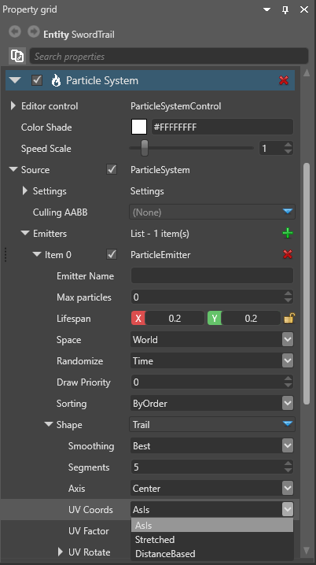

Ribbons and trails
Warning
Приносим свои извинения за неудобства. Для этой страницы нет перевода на русский язык. Она будет отображаться на английском языке.
Intermediate Artist Programmer
To create ribbons and trails, Stride builds the mesh data as a strip connecting the particles, rather than individual quads. Ribbons and trails are often used to create visual effects such as sword slashes.
In the diagram below, several particles (represented as red dots) are rendered as individual quads (blue squares):

In the diagram below, a strip is created by connecting the particles and rendering quads between the adjacent particles:
Ribbons vs trails
Both ribbons and trails generate a flat surface which follows an axis connecting adjacent particles in a line. This line defines one of the axes of the surface. The difference is that ribbons always face the camera, and trails don't.
The gif below shows the different behavior of ribbons (red) and trails (yellow) when viewed from different camera angles. Note how the ribbon doesn't change as the camera moves; it's fixed in space.

Sort particles
To create ribbons and trails, you usually need to sort the particles into an order. If you don't sort the particles, they connect erratically, as in this diagram:

Here's an example of how unsorted particles look at runtime:
Rather than the particles connecting in order, the strip erratically jumps between particles. (This is the same problem alpha-blended quads have when they're not properly sorted.)
To sort the particles, under Particle System > Source > Emitters, change the Sorting property.

If your particles have the same lifespan property, and are emitted no more than once per frame (usually the case at 30 particles per second or fewer), you can sort them by age.
However, if you spawn several particles per second or your particles vary in lifespan, sorting by age doesn't provide a consistent order, as the sorting parameter changes between frames. In this case, you should sort the particles by order. To do this, you need to add a spawn order initializer. To do this, in the entity properties, under Particle System > Source > Emitters, next to Initializers, click  (Add) and select Spawn Order.
(Add) and select Spawn Order.

This adds a spawn order initializer to the emitter. It doesn't have any properties, but it gives the particles a SpawnID we can sort them by.
Note
Sorting by depth might work in niche cases, but this doesn't preserve the order between different frames. We don't recommend it for most situations.
Texture coordinates
Unlike billboards, which are individual quads, ribbons and trails have a single surface across all particles. To define how textures are mapped across the surface, under Particle System > Source > Emitters > Shape, change the UV Coords property.

AsIs: The texture is mapped per segment, copying the same quad stretched between every two particles. This is sometimes useful with flipbook animations (in the Material settings).
Stretched: The texture is stretched between the first and last particle of the trail or ribbon. The UV Factor defines how many times the texture appears across the entire trail or ribbon (1 = once).
DistanceBased: The texture is repeated based on the actual world length of the ribbon or trail rather than the number of particles. The UV Factor defines the distance in world units after which the texture repeats

Smooth ribbons and trails
You can add extra segments between adjacent particles to smooth the lines between particles. To do this, under Particle System > Source > Emitters > Shape, change the Smoothing property.
None — No smoothing creates only one segment joining two particles. This creates trails and ribbons with sharp angles.
Fast — This uses Catmull-Rom interpolation (Wikipedia) to add extra segments between particles, creating a smoother effect. You can set the number of segments with the Segments property.
Best — This generally creates the smoothest effect, but requires more CPU. It calculates a circumcircle around every three sequential particles along the control axis, then adds extra control points on the circle, keeping the segments in an arc. For the first and the last segment, there is only one arc to be followed, but for mid-sections, two different arcs from two different circles overlap; Stride interpolates the control points from the first arc and the second as the point approaches the second particle. You can set the number of segments between every two particles with the Segments property.
This video shows the difference between the three smoothing methods. Note that the rightmost trail (using the Best method) is slightly more circular, closer to the actual path of the sword swing.
Sample project
For an example of a project that uses ribbons and trails, try the Ribbon Particles Sample included with Stride.